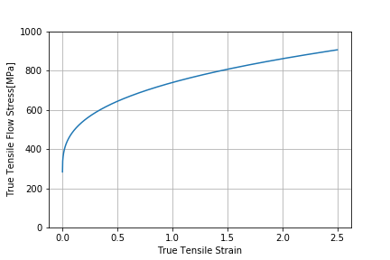

衝撃問題関連のユーティリティ機能をGitHub上からパッケージとして提供する．パッケージ名はUtility，モジュール名Impactである．
| コマンド | 内容 |
|---|---|
| BRL | BRL式による衝撃評価 |
| JohnsonCook | Johnson Cook式の評価 |
| WES | WES式による衝撃評価 |
登録されているコマンドの確認
from Utility import Impact as impact
help(impact)
BRL式の例題データに対する評価
im=impact.BRL()
M,K,D,V=im.exam1()
im.eval(M,V,D)
この結果，以下の出力を確認する．
0.006980883425430857
2024-T351 ALUMINUMの特定の塑性ひずみ，ひずみ速度時の真応力評価
jc=impact.JohnsonCook()
jc.Material('2024-T351 ALUMINUM')
ep=0.01
ep_d=0.2
T=273+15
s=jc.JC(ep,ep_d,T)
print(s)
jc.Reference()
この結果，以下の出力を確認する．
345.45780292674885
Out[3]:
"G.R.Johnson,W.H.Cook,'A Constitutive Medel And Data for Metals Subjected to Large Strains, High Strain Rates and Heigh Temeratures'"
降伏応力228MPa,引張強さ349MPa(実験時ひずみ速度1e-3)のひずみ速度1e-3,1e-2,1e-1時の引張強さ
m1=impact.WES(228,349,e0=1e-3)
ST=[m1.St(1e-3),m1.St(1e-2),m1.St(1e-1)]
print('St=:',ST)
この結果，以下の出力を確認する．
St=: [349.0, 362.3254085779881, 378.98919378599624]
2024-T351 ALUMINUMの室温，ひずみ速度100における真応力真ひずみ曲線を描画
import matplotlib.pyplot as plt
import numpy as np
import math
e=np.arange(0.0,2.5,0.001)
jc=impact.JohnsonCook()
jc.Material('2024-T351 ALUMINUM')
e_d=100
T=273+15
s=jc.JC(e,e_d,T)
ax=plt.subplot()
ax.plot(e,s)
ax.set_ylim([0,1000])
ax.grid(which="both")
ax.set_xlabel("True Tensile Strain")
ax.set_ylabel("True Tensile Flow Stress[MPa]")
plt.show()
この結果，下図の描画を確認する．
2024-T351 ALUMINUMのひずみ速度100における真応力真ひずみ曲線